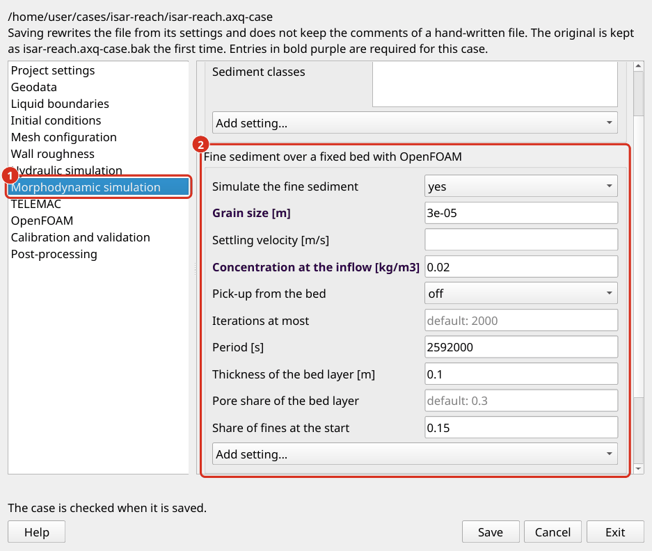

Simulations morphodynamiques
Une simulation morphodynamique calcule comment l’eau circule les sédiments et comment le lit de la rivière change en conséquence. Il prolonge une simulation hydraulique : dans chaque pas de temps, le débit déplace les sédiments, la cote du fond est mise à jour, et le lit changé à son tour modifie le débit.
aXqua propose deux simulations qui répondent à différentes questions. La simulation couplée avec TELEMAC et GAIA calcule un lit de la rivière qui bouge (TELEMAC-GAIA Configuration). La simulation avec OpenFOAM calcule sédiments fins qui passe au-dessus d’un lit de la rivière qui reste en place (Configuration OpenFOAM).
Concept
Modes de transport. L’eau qui coule déplace les sédiments de deux façons. Charriage se compose de grains qui roulent, glissent ou sautent le long du lit. C’est le mode dominant pour le gravier et le matériau grossier. Transport en suspension se compose de grains plus fins que la turbulence maintient à flot dans la colonne d’eau. La simulation des deux modes est coûteuse par calcul, de sorte que seul le mode dominant doit être activé :
un lit de gravier ou de galets avec moins de 5 à 10 % de sable : charriage seulement ;
sédiments généralement plus fins que 1 mm, comme dans les réservoirs : transport en suspension seulement ;
mélanges à forte teneur en sable : les deux modes ;
sédiment cohésif (plus de 0,06 mm) : transport en suspension est nécessaire.
Début de la motion. Un grain commence à se déplacer lorsque la contrainte de cisaillement que le flux exerce sur le lit dépasse une valeur critique. Ce seuil est exprimé par le paramètre Shields critique sans dimension, qui doit être défini pour chaque classe taille des grains. Parce qu’il est incertain, c’est un paramètre de calage typique.
Modification de l “ état civil La cote du fond change partout où le taux de transport des sédiments change le long de la voie d’écoulement. Si plus de sédiments entrent dans un endroit qu’ils ne le laissent, les dépôts de sédiments et le lit s’élèvent. Dans le cas opposé, le lit s’érode. Ce bilan massique de sédiments est appelé l’équation Exner (Exner 1925).
Couche active Seul la couche supérieur du lit de la rivière participe au transport des sédiments à un moment donné. Cette couche est appelé la couche actif. Il fournit les sédiments qui sont érodés et reçoit les sédiments qui sont déposés. Son épaisseur est un multiple du diamètre caractéristique du grain. Les couches ci-dessous forment le substrat, qui n’est atteint que lorsque la couche actif est érodé. La distinction est importante dans les rivières avec un lit blindé, où une surface grossière couche protège les sédiments plus fins en dessous (Hirano 1971) : tant que l’armure couche est intacte, peu de sédiments se déplace, et une fois qu’il se brise, le substrat plus fin est rapidement érodé.

La couche actif à la surface du lit de la rivière est en contact avec le flux. Les couches substratum ci-dessous peuvent avoir différentes compositions taille des grains. Figure par Schwindt (hydro-informatique.com, CC BY-NC-ND), conceptuellement après du Boys (1879) et Church and Haschenburger (2017).
Sédiments fins dans un lit stable. Entre les inondations, le gravier d’un lit de la rivière ne bouge pas, et deux relevés de terrain ne montrent aucun changement de lit. Le lit change néanmoins : le sable et le limon que le flux porte s’installent sur lui et dans ses pores, et un débit plus rapide les enlève à nouveau. La quantité qui décrit ce changement est la part des sédiments fins dans le matériau du lit, et non la cote du fond.
Données de référence. Un modèle de lit mobile est évalué par rapport aux changements de lit mesurés, qui sont obtenus comme la différence de deux relevés de terrain (Simulation morphodynamique). Un modèle de sédiments fins sur un lit stable est évalué en fonction de la part des amendes dans les échantillons prélevés à deux dates.
TELEMAC-GAIA Configuration
GAIA est le module de transport des sédiments de TELEMAC. Quand morphodynamics.enabled est placé dans le fichier de cas, le prétraitement écrit un GAIA fichier de paramètres (gaia.cas) à côté du modèle TELEMAC et le couple aux simulations hydrauliques.

Le transport des sédiments est activé dans les paramètres cas (Open case settings… sur l’onglet Case Setup). (1) La page Morphodynamic simulation. (2) Ses paramètres, dont d’autres sont ajoutés avec Add setting….
Entrée |
Signification |
|---|---|
|
Modes de transport à simuler. |
|
Une entrée par classe taille des grains avec |
|
Nombre de la formule de transport charriage dans GAIA (1 est la formule de Meyer-Peter et Müller). |
|
Épaisseur de la couche actif [m]. Un choix courant est trois fois le diamètre des grains grossiers. |
|
Nombre de substrats couches. |
|
La déflection du charriage sur un lit incliné latéralement, et l’angle de repos des sédiments [degrés]. |
|
Déflection du charriage par le flux en spirale dans les virages de rivière. |
|
Fourniture de sédiments à chaque frontière ouverte. |
|
Facteur par lequel le changement de lit est accéléré par rapport au débit. Une valeur de 10 signifie qu’une heure simulée représente dix heures de changement de lit. Utilisez des valeurs supérieures à 1 avec soin, et seulement pour des débits qui varient lentement. |
Des changements importants se produisent lors des inondations. Une simulation morphodynamique est donc généralement effectuée avec une série chronologique débit. Définir les séries chronologiques sous boundaries.inflow, activer morphodynamics, répéter le prétraitement et commencer la course instable (TELEMAC hotstarts) :
axqua <case-file>
axqua submit <case-file> --kind unsteady
Les résultats GAIA sont écrits à côté des résultats hydrauliques. La variable pour le changement de lit est l’évolution cumulée du lit.
Note
Les classes taille des grains sont entrées à la main. La dérivation automatique des classes de courbes granulométriques mesurées n’est pas encore disponible dans cette version.
Configuration OpenFOAM
Avec OpenFOAM, aXqua simule sédiments fins sur un lit de la rivière qui reste en place. La simulation montre où le sable ou le limon que transporte l’écoulement se dépose sur le lit, et où l’écoulement reprend. La cote du fond ne change pas. Utilisez cette simulation où les enquêtes ne montrent aucun changement mesurable de lit tandis que la part de sédiments fins dans le lit diffère d’une date d’échantillonnage à l’autre. Utilisez TELEMAC et GAIA où le lit se déplace.
La simulation utilise le solveur sediDriftFoam2 de Nils Reidar B. Olsen (Documentation). Le solveur calcule un débit stable en trois dimensions au-dessous d’une surface libre fixe, et la concentration d’une taille des grains dans ce débit. Les grains voyagent avec l’eau, coulent avec leur vitesse de décantation et sont mélangés par la turbulence. Au lit, deux processus échangent des sédiments :
Réglement. Grains tronçon le lit au taux settling velocity × concentration in the cell at the bed.
Entraînement. Le débit élimine les grains à une vitesse qui suit celle de la contrainte de cisaillement au fond, avec les formules de van Rijn (1984a, 1984b). La contrainte critique de cisaillement, à laquelle les grains commencent à se déplacer, est corrigée pour la pente du lit (Dey, 2003).
Le solveur ne fait pas partie d’OpenFOAM. Il est construit par l’installation OpenFOAM de aXqua (Ouvrir), et il fonctionne en un seul processus.
Exigences La simulation nécessite le résultat 2D stable du cas (TELEMAC à sec 2D/3D), car la surface libre de ce résultat est la limite supérieure du maillage tridimensionnel. Le maillage lui-même est le maillage du modèle OpenFOAM en mode rigid-lid (Choix OpenFOAM), quel que soit le mode utilisé par la simulation hydraulique OpenFOAM du cas. Sa taille de maille (openfoam.cell_size ou openfoam.cell_size_factor) décide combien de temps la simulation prend.
Paramètres. La simulation est définie dans le bloc fine_sediment du fichier de cas, qui est le cadre Fine sediment over a fixed bed with OpenFOAM sur la page Morphodynamic simulation des paramètres cas :
fine_sediment:
enabled: true
grain_size: 0.00003 # [m], coarse silt
inflow_concentration: 0.02 # [kg/m3], which is 20 mg/l
pick_up: off
period: 2592000 # [s], 30 days
layer_thickness: 0.1 # [m]
initial_fraction: 0.15
Entrée |
Signification |
|---|---|
|
Diamètre des grains [m]. La simulation porte une taille des grains, jusqu’à 0,002 m. |
|
Réglage de la vitesse des grains dans l’eau calme [m/s]. Si elle est vide, elle est calculée à partir de la taille des grains (Ferguson et Church 2004). |
|
Concentration de sédiments dans l’eau entrant dans le modèle [kg/m3]. Un numéro s’applique à toutes les lignes d’entrée. Pour donner à chaque ligne sa propre valeur, nommer les lignes, par exemple |
|
Ce que le lit revient au flux. |
|
Rugosité hauteur avec laquelle le contrainte de cisaillement au fond est calculé [m]. Si elle est vide, la médiane rugosité du lit mouillé est utilisée ( |
|
Épaisseur des cellules au lit [m]. S’il est vide, c’est le plus petit hauteur d’eau du modèle divisé par le numéro couches. |
|
Le plus grand nombre d’itérations. La simulation se termine plus tôt quand elle a convergé. |
|
Temps pendant lequel les taux calculés agissent [s]. Si vide, le résultat ne contient que des taux. |
|
Le lit couche pour lequel la part des fines est déclarée : son épaisseur [m], la part des pores entre ses grains grossiers, et la part des fines dans sa masse sèche au début de la période. |


La simulation des sédiments fins est définie dans les paramètres cas (Open case settings… sur l’onglet Case Setup). (1) Le cadre Fine sediment over a fixed bed with OpenFOAM. (2) Ses paramètres, dont d’autres sont ajoutés avec Add setting….
Le choix de la entraînement. Les formules de van Rijn décrivent un lit de sable, d’où l’écoulement peut enlever autant de grains que sa contrainte de cisaillement le permet. Un lit de gravier tient sédiments fins seulement dans ses pores, de sorte que ces formules surestiment le retrait par ordre de grandeur. Pour sédiments fins sur un lit de gravier, fixer pick_up: off. Le résultat montre ensuite où sédiments fins s’installe et combien, et le contrainte de cisaillement au fond dans le résultat montre où le flux est capable de le supprimer à nouveau.
Simulation. Allez à l’onglet Simulations, sous-tab Morphodynamics, et sélectionnez le programme de simulation OpenFOAM. Cliquez sur Build dans la boîte Fine sediment over a fixed bed, puis Submit. Les deux peuvent être cliqués l’un après l’autre, parce que la simulation attend sa construction, et la construction attend une simulation 2D stable qui est toujours en cours. L’affichage de progression compte les itérations. Sur un maillage de 11 000 cellules, la simulation prend moins d’une minute. Dans un terminal, les commandes sont :
axqua submit <case-file> --kind openfoam-sediment-build
axqua submit <case-file> --kind openfoam-sediment

Le sous-onglet Morphodynamics de l’onglet Simulations avec le programme de simulation OpenFOAM. (1) Le choix du programme de simulation. (2) Les options : l’échauffement pour la construction, et le plus grand nombre d’itérations pour la simulation. (3) Build crée le modèle. (4) Submit commence la simulation. (5) Load results ajoute le lit avec ses sédiments fins à la carte.
Résultats. Load results ajoute la couche Fine sediment at the bed à la carte. Il détient un polygone pour chaque colonne de cellules, avec les attributs énumérés ci-dessous, et est coloré par le changement de la part des amendes, ou par le taux net si le cas ne définit pas de période. Le fichier est axqua-case/openfoam-sediment/fine-sediment-bed.gpkg. Les champs tridimensionnels de vitesse et de concentration peuvent être ouverts dans ParaView via case.foam dans le même dossier.
Attribut |
Unité |
Signification |
|---|---|---|
|
m |
Hauteur d’eau. |
|
m/s |
Vitesse d’écoulement dans la cellule au lit. |
|
N/m² |
Contrainte de cisaillement au fond et sa valeur critique pour le taille des grains, comme le solveur les calcule. |
|
- |
Paramètre de transport de van Rijn : l’excédent de la contrainte de cisaillement sur sa valeur critique, divisé par la valeur critique. Zéro là où le flux ne peut pas déplacer les grains. |
|
kg/m3 |
Concentration des sédiments dans la cellule au lit. |
|
kg/(m2 jour) |
Masse qui s’installe sur le lit, masse que le flux prend, et leur différence, par zone de lit et jour. Un positif |
|
kg/m2 |
Mass of sédiments fins que le lit prend pendant la période. |
|
- |
Part des amendes dans la masse sèche du lit couche à la fin de la période, et son changement depuis le début. |
|
- |
-1 où le lit couche a donné toutes ses amendes, 1 où ses amendes ne s’intègrent plus dans ses pores. |
Les quatre derniers attributs ne sont présents que si le cas définit un period. Ils découlent d’un bilan de masse du lit couche. La couche contient des grains grossiers d’une masse de 2650 kg/m3 × layer_thickness × (1 - porosity) par zone de lit, qui restent en place. Tous les sédiments fins que le lit prend est ajouté à la couche, et la couche ne peut pas donner plus d’amendes qu’il détient. La densité des grains est de 2650 kg/m3, car les formules du solveur contiennent cette valeur.
Avec la couche, aXqua écrit un budget sédimentaire (fine-sediment-budget.json) et l’imprime dans le log de la tâche : la masse de sédiments qui entre dans le modèle par seconde, la masse qui la quitte, et les masses qui s’installent et sont ramassées sur tout le lit. Dans une simulation convergente, ce qui entre équivaut à ce qui part plus ce que le lit prend. Si plus de 2 % restent inexpliqués, le résultat le dit, et iterations doit être augmenté.
Limites Les limites suivantes résultent du solveur et de la surface libre fixe. Ils font partie de chaque résultat :
The water surface is fixed. C’est la surface libre du résultat 2D et ne peut pas répondre au flux tridimensionnel. Là où il passe par plus que la hauteur d’eau locale dans deux cellules, comme à une truffe d’un tronçon peu profond, l’écoulement en dessous devient trop rapide, et la construction refuse le cas. Avec
openfoam.allow_stepped_lid: true, le cas est néanmoins construit, et le résultat indique combien les étapes sont grandes et à quelle vitesse la cellule la plus rapide est. Lisez le lit près de ces étapes avec soin.The bed does not move. Le solveur peut aussi baisser et élever le lit. aXqua n’utilise pas cette fonction, parce que le solveur impose ensuite une hauteur d’eau minimale en abaissant le lit et traite les extrémités du modèle comme les extrémités d’un flume de laboratoire.
One grain size and one roughness. Les mélanges de sédiments et les zones de rugosité ne sont pas représentés.
Steep bed. Lorsque le lit s’élève fortement dans une cellule, le solveur calcule un contrainte de cisaillement au fond qui est trop élevé. La construction rapporte la part de ces cellules et refuse un maillage sur lequel le calcul échouerait. Les petites cellules réduisent la part.
Steady flow in one process. Une série chronologique débit ne peut pas être simulée, et la simulation ne se déroule pas en parallèle.
Références
Church, M., and Haschenburger, J. K. (2017). « What is the “active layer”? » Water Resources Research, 53, 5-10. doi:10.1002/2016WR019675
Dey, S. (2003). « Threshold of sediment motion on combined transverse and longitudinal sloping beds. » Journal of Hydraulic Research, 41(4), 405-415. doi:10.1080/00221680309499985
Du Boys, P. (1879). « Études du régime du Rhône et de l’action exercée par les eaux sur un lit à fond de graviers indéfinisable. » Annales des Ponts et Chaussées, 5(18), 141-195.
Exner, F. M. (1925). « Über die Wechselwirkung zwischen Wasser und Geschiebe in Flüssen. » Akademie der Wissenschaften in Wien, math.-naturw. Klasse, Sitzungsberichte, Abt. IIa, 134, 165-203.
Ferguson, R. I., and Church, M. (2004). « A simple universal equation for grain settling velocity. » Journal of Sedimentary Research, 74(6), 933-937. doi:10.1306/051204740933
Hirano, M. (1971). « River-bed degradation with armoring. » Proceedings of the Japan Society of Civil Engineers, 1971(195), 55-65. doi:10.2208/jscej1969.1971.195_55
Van Rijn, L. C. (1984a). « Sediment transport, part I: Bed load transport. » Journal of Hydraulic Engineering, 110(10), 1431-1456. doi:10.1061/(ASCE)0733-9429(1984)110:10(1431)
Van Rijn, L. C. (1984b). « Sediment transport, part II: Suspended load transport. » Journal of Hydraulic Engineering, 110(11), 1613-1641. doi:10.1061/(ASCE)0733-9429(1984)110:11(1613)